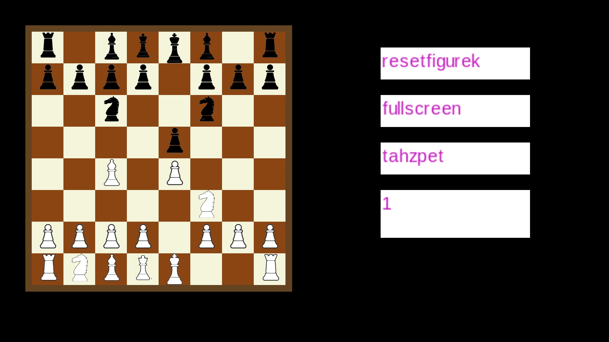

C++ · SDL · My own engine
Chess
I write the engine behind the moves: legal move generation, position evaluation, and search. You can play through the SDL interface or run the same engine from the command line over UCI.


The rules come before the clever moves.
Open full screenshot ↗Before choosing a move, the engine has to know which moves are legal. It handles check, castling, en passant, promotion, repetition, and the fifty-move draw. The SDL interface adds undo, reset, and fullscreen play. The screenshot shows the current app after a scripted opening.
- Keep a move ready as the search goes deeper.
Iterative deepening finishes one depth before starting the next. That leaves a completed result available if the search has to stop.
- Try promising moves first.
Move ordering helps alpha-beta pruning skip branches of the search. A transposition table reuses results when different move sequences reach the same position.
- Follow the exchanges before judging the position.
Quiescence search follows tactical exchanges beyond the main search depth. The evaluation weighs material, piece placement, pawn structure, and king safety.
Recorded search · depth 5 · one worker
> go depth 5
info depth 5
nodes 134582
time 2874
score cp 18
pv b1c3
info string workers 1
bestmove b1c3Set the search limits.
Root moves can be split between a configurable number of workers. The desktop app accepts --threads; UCI exposes Threads, Hash, OwnBook, and time controls. Above is one recorded run at depth 5 with one worker.
Recorded UCI session · selected lines
> uci
id name Michal Chess
id author Michal
option name Threads type spin default 7 min 1 max 256
option name Hash type spin default 16 min 1 max 1024
option name OwnBook type check default true
uciok
> setoption name Threads value 1
> setoption name OwnBook value false
> isready
readyok
> position startpos moves e2e4 e7e5 g1f3 b8c6 f1c4 g8f6
> go depth 5
info depth 5 nodes 134582 time 2874 nps 46815 score cp 18 pv b1c3
info string workers 1 book candidates 0
bestmove b1c3Run it from the command line.
UCI gives the engine a text interface: send a position and search limits, then read the result. It also responds to stop while searching. The same engine runs without an SDL window. The transcript above shows a recorded command-line session.